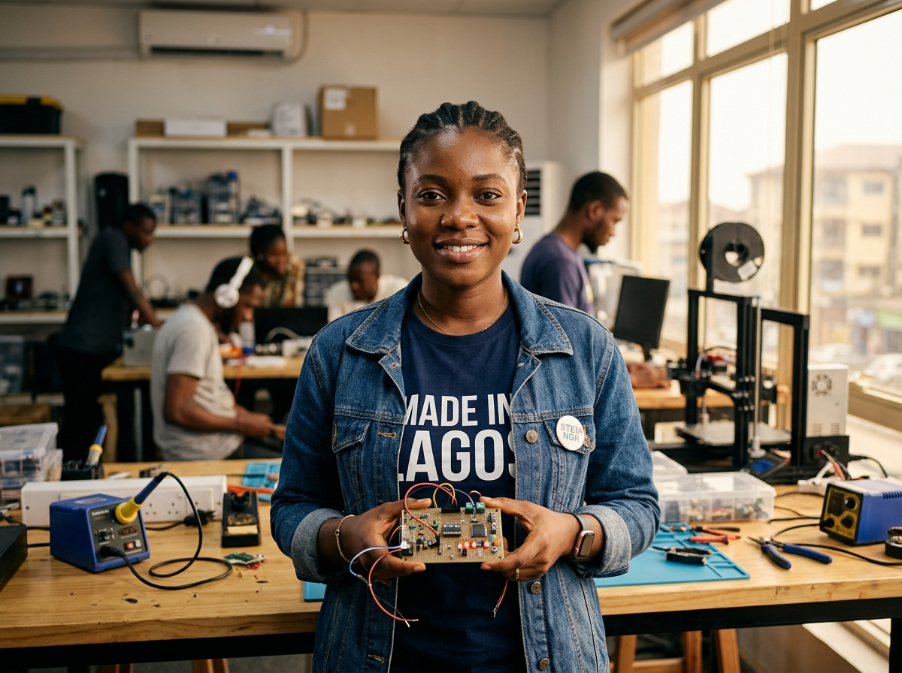
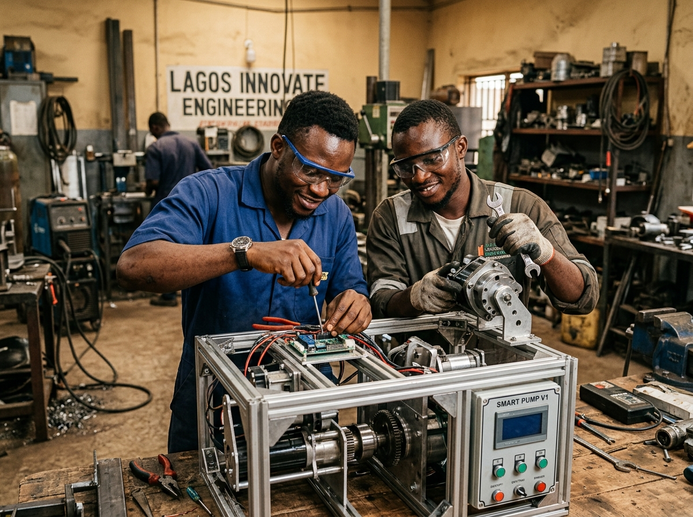
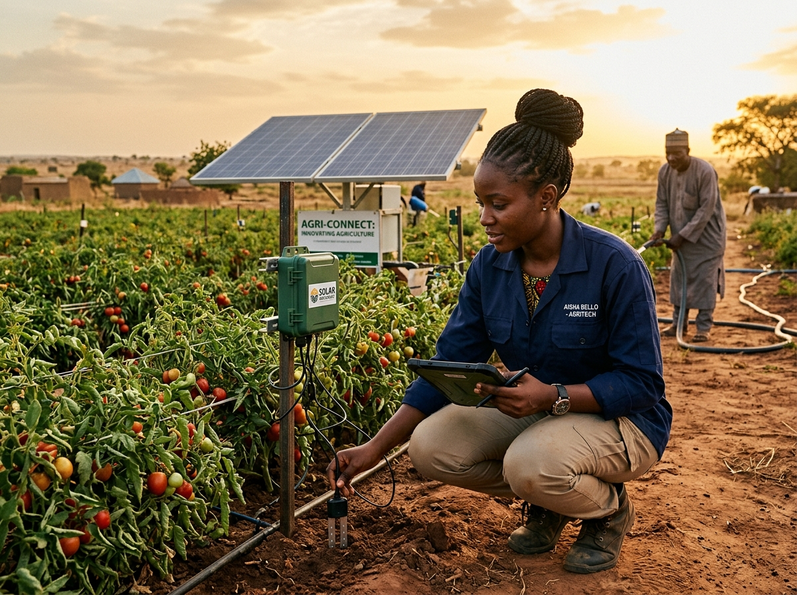

Category 01
Digital & Emerging Technology
Software, artificial intelligence, robotics, electronics, and digital solutions that address real-world challenges.
Explore areaLet's discover the people turning local challenges into practical solutions.
GITH creates a pathway for emerging innovators across Nigeria to present their ideas, demonstrate their work, and connect with opportunities to grow their impact.
From practical inventions to emerging technologies, discover the many ways innovators are solving problems around them.
Software, artificial intelligence, robotics, electronics, and digital solutions that address real-world challenges.
Explore area
Agriculture, renewable energy, water, environmental solutions, and technologies that improve everyday life.
Explore area
Prototypes, manufacturing, engineering, transportation, and locally developed products.
Explore areaGITH is designed to help bring grassroots innovation into view, creating a clearer pathway for promising ideas and the people behind them to be discovered.
Whether an innovator is building a first prototype, developing a practical invention, or refining a solution for a community challenge, the journey begins with making that work visible.



Some of the most useful solutions begin with a problem someone sees every day. GITH is built around the belief that these ideas deserve a clearer path to recognition, development, and opportunity.
By bringing attention to grassroots talent and practical problem-solving, the platform aims to help promising innovations reach the people, resources, and networks that can help them grow.
Give your idea a place to begin. GITH helps make the first steps clear.
Tell us about yourself, your skills, and where you are working from.
Explain the challenge you are addressing, your proposed solution, and its current stage of development.
Provide the information and supporting materials required for your application.
Return to your dashboard to follow the recorded status of your submission.

GITH welcomes innovators from all backgrounds across Nigeria who are dedicated to creating solutions for national progress.
Explore ideas, prototypes, and practical solutions emerging from different communities across Nigeria.
Renewable Energy
A solar-powered IoT hardware gateway utilizing low-cost GSM and LoRa mesh telemetry to monitor current loads, detect phase imbalances, and prevent rural micro-grid outages.
Start with what you know, the problem you want to solve, and the solution you are working to build. GITH is ready to receive your innovation.